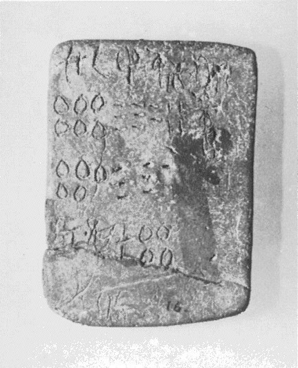
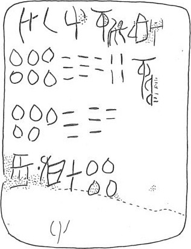

-
HT15
Names
Aliases for the inscription.
HT15, HT 15
Support
Type of Object.
Tablet
Location
Site where object was found.
Haghia Triada
Findspot
Location at Site.
Villa Magazine


Scribe
Writer of Inscription.
Unavailable
Context
Approximate Date of Inscription.
Late Minoan IB
1500-1450 BCE
Dimensions
Height x Length x Thickness.
6.90
5.10
0.90
cm
GORILA OCR
Catalogue
Museum Reference Number.
HM 16
Hiraklion Museum
Readings
1 1 0 U certain
1 1 0 *34 certain
1 1 0 SI certain
1 1 1 GRA certain
1 2 2 DU certain
1 2 2 AROM certain
1 2 2 A doubtful
2 2 3 600 certain
2 2 3 80 certain
2 2 3 4 certain
2 3 4 GRA+L4+L4 certain
3 3 5 500 certain
3 3 5 70 certain
4 4 6 *188 certain
4 4 7 *900 certain
4 4 8 KI certain
4 4 8 RO certain
4 4 9 400 certain
Linear A Transcription
A Linear A transcription with words parsed separately.
Line breaks match the inscription.
𐘉𐘟𐘤𐙉𐘬𐙌𐘇
𐄞𐄗𐄊𐛹
𐄝𐄖
𐙓𐄁𐘸𐘁𐄜
ASCII Transcription
An ASCII transcription with words parsed separately.
Line breaks match the inscription.
U*34SIGRADUAROMA
600804GRA+L4+L4
50070
*188*900KIRO400
Linear A Tabulation
A Linear A transcription with words parsed separately.
Line breaks are logical, e.g. to represent a list.
𐘉𐘟𐘤𐙉
𐘬𐙌𐘇𐄞𐄗𐄊
𐛹𐄝𐄖
𐙓𐄁𐘸𐘁𐄜
ASCII Tabulation
An ASCII transcription with words parsed separately.
Line breaks are logical, e.g. to represent a list.
U*34SIGRA
DUAROMA600804
GRA+L4+L450070
*188*900KIRO400
HT 15
, page tablet (HM 16) (GORILA I: 30-31)
Schoep 2002, type II (specialized commodities)
|
side.line
|
statement
|
logogram
|
number
|
fraction
|
|
.1
|
U-*34-SI
|
GRA
|
|
|
|
.1-2
|
DU-*123-
A
|
|
684
|
|
|
.2-3
|
|
GRA+L3L3 {*586}
|
570
|
|
|
.4
|
*188 • KI-RO
|
|
400
|
|
|
.5
|
[[
vestigia
]]
|
|
|
|
a.1: DU-*123-A is written smaller than
the preceding statement, and seems an after-thought squeezed in. Sign *123
may be the same
as Linear B AROM (herbs, condiments, spices), but here given a phonetic
value. The last sign is abraded; JGY reads it as doubtful.
Schoep
2002, 78-9, 181: DU-*123-A was probably meant to precede U-*34-SI GRA. The
large numbers and the mention of a deficit (400 owed, from a total 1254 expected) imply these are incoming commodities. The amounts are (more or less) multiples of 57 (12*57 = 684, 7.02*57 = 400), "implying an underlying tax system".
Commentary © John Younger
References
papers/GORILA-Vol1.pdf#page=66